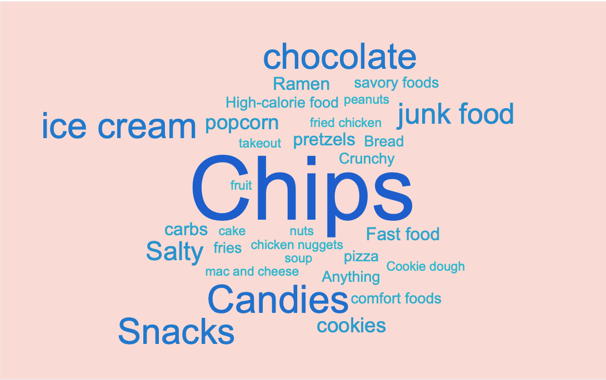
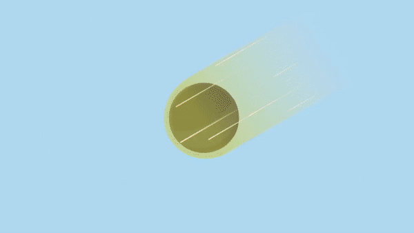

Problems
Stress-eating may provide temporary relief, but when it loses control, many problems await.
Stress-eating is a common behavior in modern society. While it's not yet defined as harmful, people are unaware of themselves doing it. However, this may cause unhealthy loops on digestive disorders, body issues, and anxiety.
In this project, we researched on the pattern of stress eating behavior and tried to raise people's awareness of it with a metaphorical game.
Overview
Simulate the Dilemma of everyday stressed-eating scenes through the Designed Mechanism
Maintain good condition
- Users have to maintain their Focus, Hunger, and Stress while exploring the maze.
- When Focus decrease, the vision becomes fuzzy
Berry as junk food
- Eating berry may lower the Stress a little, but Focus drops at the same time.
- Simulate the temporary relief and the longterm effect
Pieces as tasks
- Find all the pieces to pass the game.
- Simulate the sources of stress in daily life
Exercise as alternatives
- Exercise may lower "Stress" and increase "Focus" at the same time.
- Give players an example of alternatives to destress.
Research - Survey
Conduct a survey to learn about people's Thoughts and Experiences on Stress-eating
We surveyed with students of 3 Big Ten universities from undergrad to Ph.D.; the survey questions are about:
- Their frequency of stress-eating
- Their experiences on stress-eating
- What do they eat
- How they feel during/after stress-eat
76% of the participants stress-eat. And they eat...
Research - Interview
Conduct 7 interviews to explore different kinds of stress-eating behavior
We contacted the participants who're willing to share more stories about there stories. And after that, we concluded the information obtained from surveys and interviews and found out the pattern of stress-eating behavior.
The Challenge
Stress-eat is not that bad until Lose Control
Not all the participants found stress-eat a bad thing, but if them overeat unintentionally, they feel bad.
People stress-eat because they Don't Have Enough Time to Destress
Most of the participants have their ways destress. But while they are busy working/studying, eating is the most efficient way to destress.
People stress-eat while they are Alone at Home
Most of the participants stress-eat while they are alone; some of the participants said that peer pressure could stop them from stress-eating.
Design - Ideation
We focus on the challenges and Brainstorming for Potential Solutions
Set a limitation for stress-eat
Mini Thief
A mini robot with emotion steals your food and hides it somewhere else.
Don't eat; Earn!
If the user doesn't eat a certain amount of snacks in the box, they get money back.
Crocodile's Food
Put snacks in a Crocodile Dentist, when people eat, croc bite.
Choose healthy foods
Lower Cortisol app
Remind users to choose alternative foods. If they follow, get points in the game/app.
Water flavor trickery
Make water taste like juice through technology on the rim.
Keep people accompanied
VR/AR pet
Destress through a companion.
VR Cafe
Meet up with friends in the virtual world to keep working.
However, nobody would like to use an app that lies or interrupts. To solve the problem fundamentally, the best way is to Keep Them Aware.
We decide to design a game to Raise Awareness of Stress-eating
Design - Story Line
Designed a story to Introduce the Metaphors
Story begins with...
Alien character Remy is on tour in outer space while an extremely savory smell coming from Earth catches Remy’s attention. Remy subconsciously steered the mini starship and followed the smell towards Earth. Too focused on getting to the smell, Remy’s ship gets caught in Earth’s gravity and crashes into 10 pieces on an island in the middle of the ocean. Surviving the crash and waking up from the impact, Remy sets off on a journey to find the scattered pieces within 14 days to catch the routing starship back to its planet.
Tell players what the game is all about in the end
Story ends with...
"Would you like to take the berries back to your planet?"
Yes - "We respect your choice, but understand that overeating unhealthy food in stressful situations can harm your health. Good luck!"
No - "Congratulations! Seems like you've understood staying away from unhealthy foods can lead to a healthier life!"
Design - Mechanism
Designed the mechanism to Simulate the Dilemma during gameplay
Stress, Hunger, Focus
Just like in real life, the character in the game needs to digest. Also, their Hunger increase and Focus decrease throughout time.
Magic Berry (Junk food)
Magic Berry (Junk food) While the player decides to eat the berry, the Stress decreases a little bit. However, the Focus drops at the same time. And low Focus leads to a fuzzier vision, which makes the game become harder.
Spaceship Pieces (Works)
Players will have to find the pieces in limited time, which is the metaphor of the deadlines.
Exercise (Alternatives)
Players may choose to exercise with the animals on the island. Exercise can increase Focus and lower Stress but takes more time.
Takeaways & Reflection
Takeaways
Emotion matters
In the early stage of our design process, we tried to find ways to interrupt or lie to users. I then realize that if an app or a game is linked to negative emotions, the user would never be satisfied with it even if they reached the goal.
Be aware not to judge easily
Stress-eating may lead to the weight change. Although not everyone likes to gain or lose weight, we have to be careful not to judge people by their shapes, especially when it comes to designing.
Reflection
Test, test, 123
We have very limited time on research and design before submitting to the CHI2020 Student Game Competition. And so, we don't have enough time on user testing. Through user tests, we may refine the design and get a better understanding of the social impact of the game.
Teammates
Jason Chou, Shih-Yu Chu, Tianyang Lu, Dehyee Esther Tang, Ming-Hsuan Tao
Special thanks to Prof. Mark Newman for providing precious advice during the design process
Role in Project
UX Researcher
UX Designer
Research
Survey | Interview | Literature Review
Design
Persona | Wireframing | Prototyping
Duration
4 months (Oct. 2019 - Jan. 2020)